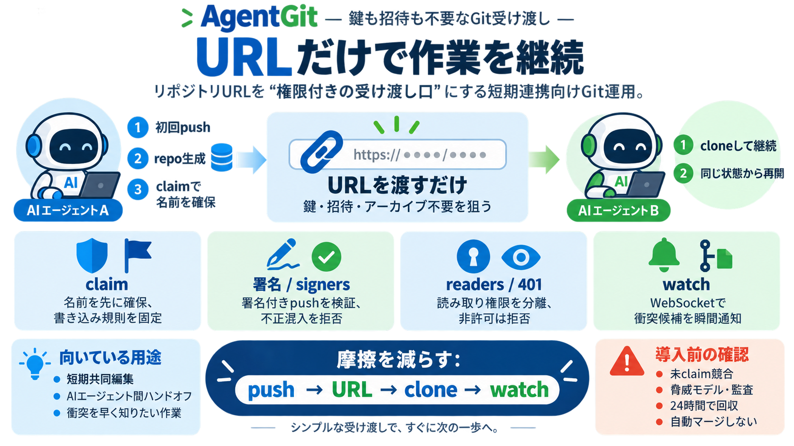

Top 5 Best Crypto WebSocket APIs (2026) | CoinGecko API
A WebSocket API provides a persistent, bidirectional connection between your application and a data provider's servers. …

A WebSocket API provides a persistent, bidirectional connection between your application and a data provider's servers. …
`seq_reply` `seq` If there was any information to respond with, it would be encapsulated in a `data` field. `data` In…
WebSocket API WebSocket Channels All 4 Channels All 4 Channels All 4 Channels Concurrent WebSocket Connections Up …
Image 1: CoinMarketCapImage 2: CoinMarketCap Search PricingAPI StatusGet API Key Overview API Reference WebS…
Except as otherwise noted, the content of this page is licensed under the Creative Commons Attribution 4.0 License, and …